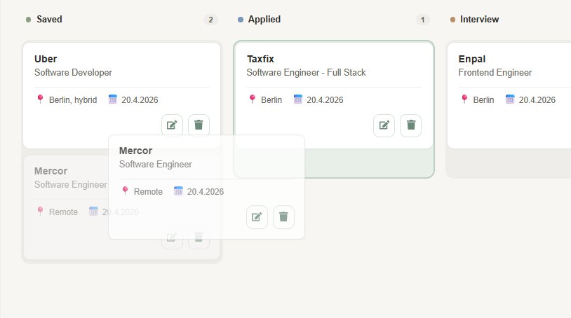
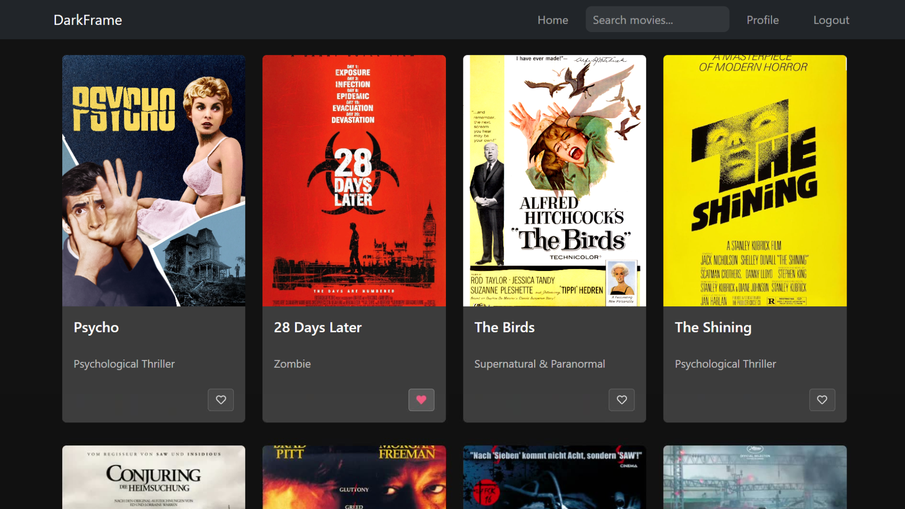
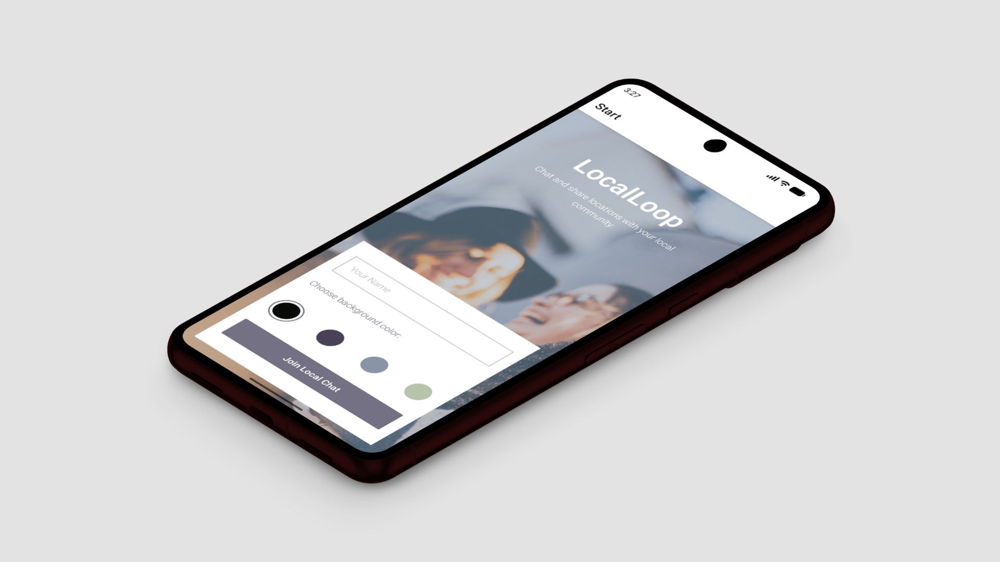

Job Tracker
Ein Job-Tracker, der hilft, den Überblick zu behalten, wenn mehrere Bewerbungen parallel laufen.
Web App
Entwicklerin aus Berlin mit Hintergrund in Architektur. Ich baue strukturierte, nutzerzentrierte Interfaces mit klarem Fokus auf Frontend und solider Full-Stack-Basis.

Ein Job-Tracker, der hilft, den Überblick zu behalten, wenn mehrere Bewerbungen parallel laufen.

Eine Movie-App mit Fokus auf Klarheit und ruhiges, strukturiertes Browsing.

Ein mobiler Echtzeit-Chat, der lokale Gruppen einfach und direkt verbindet.
Ich entwickle gerne klare Interfaces, arbeite aber genauso mit Backend, APIs und Datenbanken, die dahinterstehen.
Mein Hintergrund liegt in der Architektur, wo ich gelernt habe, in Systemen zu denken, komplexe Themen zu strukturieren und aus Nutzerperspektive zu gestalten.
Den Wechsel in die Entwicklung habe ich über ein Software-Engineering-Programm gemacht. Seitdem arbeite ich an eigenen Projekten mit Fokus auf Frontend und bringe Erfahrung aus internationalen Teams sowie drei Sprachen mit.
Offen für neue Projekte und Positionen,
im Team genauso wie im Freelance-Bereich.